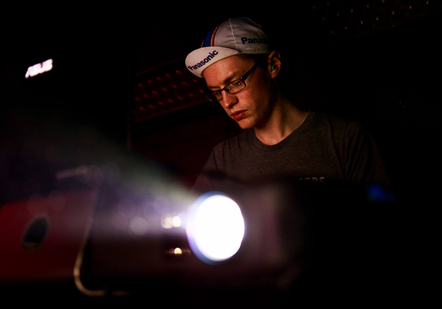

JPEGSTRIPES
|  |
| Photo credit: Cintax Photo, 2016 |
JPEGSTRIPES is my alias for producing and performing noise/glitch music, and for projecting visuals at live shows. Below are some of my music albums, followed by some music videos. You can download my music at my Bandcamp page, and hear more at my SoundCloud page. Find more videos on my Vimeo channel. If you would like to book JPEGSTRIPES for a show or event, please email me.
Music
Videos
Music video by Kent Sheely for "Brutal Minimal", from "CPU Jams, vol. 2"
Music video by Paul Puiia for "IT'S THE COPS", from "CPU Jams, vol. 2"
Music video by Daniel Saylor for "Action Highway", from "CPU Jams, vol. 2"
Music video by Alex Norelli for "Rube Goldberg's Laundromat", from "CPU Jams, vol. 2"
Music video by Rui Martins for "Unreleased Alien Footage", from "CPU Jams, vol. 2"
Music video by Jordan Bortner for "K2 Summit", from "CPU Jams, vol. 2"
Music video by bryn nieboer for "Industrial Sawmill", from "CPU Jams, vol. 2"